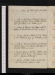
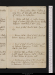
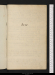
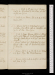
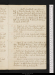
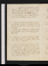
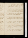
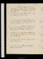

- About
- Diary
- People
- Events
- Reading
- Writing
- Meals
- Meetings
- Search

2. W.Revise, Write 2 pages. Holcroft calls. Sup at Nicholson's, revise avec lui B. VIII, Chap. VIII.
3. Th.Call on Blair, nah. Jardine & Dyson call. Masters at tea. Indisposede. Bibliotheque de l'Homme Public, Utopia.
4. F.Revise: write 4 pages. Call on Davis, best book that ever was publishede. Thucydides, 14 pages.
5. Sa.Revise: write 3 pages. Thucydides .
Jan. 6. Su.Call on Nicholson. Revise. Dine at Holcroft's: adv. Dyson & Dibbin, talk of plagiarism, abstraction & ideas; Kearsley. Masters sleeps; advise him on pursuits & baptism. Fenwick calls, nah.
7. M.Preface, 5 pages: revise.
8. Tu.Call on Barry (reads his pamphlet), mrs Inchbald nah & Davis: Dine at Holcroft's. Revise.
9. W.Jardine calls. Call on Robinson. Indisposed aprèse.Read cursorily Chatham, V. III, 70 pages; & Benev. Quixote, 150 . Fenwick tea & supper.
10. Th.Revise. Read Pol. Justice, 18 pages: finish C Chatham, Vol. III. Sup at Nicholson's, revise Preface avec lui, applauds dissimulation.
11. F. Write 2 pages. Pol. Justice, 78 pages. Ben. Quixote, 84 pages. Dyson at tea. Laxnesse.
12. Sa.Read Dunstan. Pol. Justice, 23 pages: Sublime, Pt. V, 32 pages.
Jan. 13. Su. Meditation. Pol. Justice, 30 pages. Dine at Holcroft's: adv. Murray perruquier. Paradise's, Gillies, Planta, Ingenhousz
14. M.Call on mrs Inchbald & B Hollis, nah. Pol. Justice, 103 pages: Pamphlet by an Old Whig. Sup at miss Godwin's, talk of mild firmness.
15. Tu. Fevere. Pol. Justice, 19 pages. Fenwick matin. Sup at Holcroft's. Louis guilty, 693 to 26: Appeal 280 to 424e
16. W.Write Mucius, Letter 1. Pol. Justice, 69 pages. Jardine calls: Fenwick calls.
17. Th.Mucius, Letters 2 & 3. Pol. Justice, 13 pages. Call on Holcroft & Gray. Appeal, 283 Death, 366 to 321e
18. F.Mucius, Letter 4. Pol. Justice, 25 pages. Tea mrs Inchbald's: sup at Nicholson's, with a new paragraph sur lui, discuss his motives.
19. Sa. Mucius, Letter 2 1/2 pages. Call on W Morgan: write to Franklin. Pol. Justice, Vol. II, 18 pages: First of July, a Comedy by E. T. Delay 310 to 380e
Jan. 20. Su.Mucius, Letter 2 1/2 pages. Dine at H Tooke's, with Holcroft, Sharpe, Banks & Jardine.
21. M.Stuart calls. Write to Morgan. Miss Godwin dines: Masters au soir. Execution of Louise
22. Tu.Call on Chauvelin (see Renaud), Holcroft & Davis: meet Perry. Write to National Convention & Norman: paragraph in preface. Sup at Nicholson's.
23. W.Pol. Justice, 38 pages. Jardine & Fenwick at tea.
24. Th.Pol. Justice, 168 pages: H Tooke's Trial: Vaughan on War, 78 pages. Chauvelin directed to withdrawe
25. F.Pol. Justice, 161 pages. Call on Holcroft, Davis & Pinard.
26. Sa.Pol. Justice, 93 pages. Transcribe letter to Nat. Convention, &c. Call on Davis: tea at Jardine's, with Restiff, talk of Louis & law.
Jan. 27. Su.Carry my book to Chauvelin's. Errata. John Godwin calls. Dine at Holcroft's: read the Amorous Baronet.
28. M.Notes on A. B. Dine at Holcroft’s, adv. Merget. Fox’s pamphlet. Loughborough, chancellore: Erskine & Pigot dismissede.
29. Tu.Call on Robinson & Davis. Finish Pol. Justice. Play, Every one has his Faulte, with Robinson, Murphy, Davis & Chalmers. Sup at Holcroft's.
30. W.Write to Jardine & miss Cooper. Finish Vaughan on War, 32 pages: McIntosh to Pitt: Virgil, vs 198: Hume's Essays, IV, V, 8 pages.
31. Th.Walk ad Dom. Com.eHume on Morals, 33 pages: Virgil, vs 163: Dehors Trompeurs, actes 1 & 2.
Feb. 1. F.Walk ad Dom. Com.eHume on Morals, 24 pages: Virgil, vs 192:finish Dehors Trompeurs: Embarras du Choix, actes 1 & 2. Dyson. War decreede
2. Sa.Call on Robinson. Tea Jardine's, w. Fenwick: Fenwick sups. Embarras du Choix, actes 3 & 4.
Feb. 3. Su. Dine at Holcroft's: adv. Jardine, Fenwick & Mercier. Virgil, 152, end of B. IV.
4. M. Call on Robinson, Nicholson & Holcroft. Jardine, Fenwick, Symonds & Pearson at tea: Fenwick sups.
5. Tu.Call on Robinson. See the Mourning Bridee: sup at Holcroft's. Finish Embarras du Choix.
6. W.Call on Nicholson, with Holcroft; talk of disparaging my book. Amorous Baronet. N. promises to write to R.
7. Th.Call on Robinson (sign agreement & accounts), //Holcroft & mrs Inchbald. Sup at miss Godwin's.
8. F.Accounts & papers. Ecole des Maris, act 1.
9. Sa.Holcroft's review of D. Stewart. Jardine calls: Holcroft at tea. Sallust, 5 pages: Thucydides, 6 pages: Ecole des Maris, act 2/2.
Feb. 10. Su. Dine at Burney's, w. Jardine & Charles. Call at Wedgwood's, w. Jardine, see //John. Soir, Paradise's, Jardine, Planta, Lord Sandys, Adriani. Finish Ecole des Maris. Sallust, 2 pages}
11. M. Sallust, 2 pages. Call on Barry; he had sought me to enquire after my book.
12. Tu.Sallust, 4 pages: Ecole des Femmes, acts 1, 2, 3. Jardine calls. Indisposede.
13. W.Sallust, 2 pages: Hume 15 pages.
14. Th.Sallust, 3 pages: Hume 17 pages: Ecole des Femmes, act 4. Jardine calls. Holcroft at tea: go w. him to Jardine, meet Restiff. Dyson calls, nah. Publication.
15. F.Ecole des Femmes, act 5. Dine at Wedgwood's, with Jardine, Allen & Tom, talk of Burke, Fox, revolutions, property & the foundation of morals.
16. Sa.Write on the Present War, 2 pages. Sallust, 1 page: Les Facheux .
Feb. 17. Su.Sallust 4 pages: Etourdi, acts 1 & 2. Dine at Holcroft’s, adv. Belmano & Dyson. Paradise’s, Hawke, Ingenhousz, Planta, Gillies, Dornford: abused by madamee. Call on Mrs Barlow}
18. M. Sallust, 3 pages. Dyson at tea: Barry's Lecture e: sup at Holcroft's. Etourdi, act 3.
19. Tu.Sallust, 3 pages. Call on Inchbald. Etourdi, act 4.
20. W.Call on Robinson, Holcroft & Barry. Review Every one has his Fault for the Eu. Jardine & Symonds at tea.
21. Th.Read the Amorous Cynic. Wedgwood's Concerte : sup at Holcroft's.
22. F. Amorous Cynic: Holcroft at tea, sup at Holcroft's.
23. Sa.Sallust, 4 1/2 pages: Horace, Odes 1 & 2: Etourdi, act 5. Call on Davis.
Feb. 24. Su.Write 1 page. Sallust, 2 pages. Horace, Ode 3. Dine at Holcroft's, talk of N's// attack on moral character, & of juvenile coercion: adv. Murray Stephen.
25. M.Finish Sallust's Catiline, 2 pages: Cicero in Catilinam, Orat. I, §. 1 & 2. Tea at Marshal's, with Holcroft & Cooper. Go to the Comedy of Anna, with Inchbalde. Cooper for Portsmouthe.
26. Tu.Catilinaria I, §. 3, 4, 5, 6: Voltaire's Life of Molière. Call on Nicholson, discuss moral character. Dine at B Hollis's, with Holcroft, Heywood, Dyer & Disney. talk of Louis & gratitude.
27. W.Catilinaria I, §. 7: Middleton, 76 pages: Lettres Chinoises, Volt., 30 pages: Vie de Moliére, Anon., 80 pages. Call on Inchbald, talk of Sheridan & reading. Fawcet calls, nah tumour e
28. Th.Finish Cat. I: Middleton, page 118: Vie de Mol., page 180.
Mar. 1. F. Horace, Odes 4, 5, 6: Middleton, page 209: Hume on Morals, 290 to 301: finish Vie de Mol., 314. Write to Masters. weather.
2. Sa. Write to Mrs Cooper. Cat. II, §. 1, 2, 3, 4: Horace, Ode 7: Middleton, p. 270: [Co?]cu Imaginaire . Jardine calls, nah.

Mar. 3. Su.Cat. II, §. 5, 6, 7, 8: Horace, Ode 8: Middleton, p. 284. Dine at Holcroft’s, adv. Dyson, talk of pleading & law. Man as he is, p. 38.
4. M. Write to C. Horace, Ode 9: Middleton, p. 292: Man as he is, p. 126. Dom. Com., Sheridan on insurrectionse, see Mcintosh &Gray.
5. Tu. Write 7 pages. Middleton, p. 351; Preface to do, 26 pages.
6. W. Write 2 pages. Finish Cat. II: Horace, Odes 10, 11: Middleton, p. 402: Man as he is, p. 215. Jardine calls. Hull Godwin married
7. Th.Write 7 pages. Cat. III: finish Middleton, Vol. I, p. 423; Vol. II, p. 17: Man as he is, p. 219. Holcroft calls, with Review.
8. F.Write 5 1/2 pages. Middleton, p. 34: finish Man as he is, Vol. I, p. 288. Jardine calls.
9. Sa. Cat. IV, §. 1-5: Middleton, p. 71: Man as he is, p. 74.
Mar. 10. Su. Write 4 pages. Finish Cat. IV. Dyson & Dibbin call: advise the latter. Dine at Holcrofts: sup with him at Nicholson’s, talk with of necessity.
11. M.Write 4 1/2 pages. Middleton, p. 100: Man as he is, p. 104. Carry ms to Holcroft, supper .
12. Tu.Consult documents. Call on Holcroft. Jardine at tea. Man as he is, p. 217.
13. W.Write 4 pages. Pro Rabirio: Man as he is, Vol. III, p. 12. Marshal at tea: sup at miss Godwin’s.
14. Th.Write 1 page. Middleton, p. 112: Man as he is, p. 105. Tea Jardine’s, with Holcrt & Swale: sup at Holcroft’s.
15. F. Horace, Odes 12, 13, 14: Middleton, p. 204: Man as he is, p. 145. Call on B. Hollis & Inchbald, nah.
16. Sa.Middleton, p. 234. Dine at Henley’s; sup at miss Godwin’s, with Mrs Cooper; mrs Mills.
Mar. 17. Su.De Bello Civili, §. 1-6: Middleton, p. 306. Dine at Holcroft’s.
18. M. De Bello Civili, §. 6-13: Horace, Odes 16, 17, Epist. I: finish Middleton, Vol. II, p. 438: Man as he is, p. 209. Marshal at tea.
19. Tu.Horace, Ep. II: Turgot, p. 182-189: Man as he is, p. 227. Dr Lister calls, talk of reason & sentiment. Play, the Rival Sisterse: sup at Holcroft’s, with Dyson; letter, Griffith to Holcrofte.
20. W.Rewrite Jardine’s Review for the Eu. Mag. Turgot, ça & la: Middleton, Vol. III, p. 6: Man as he is, fin. Vol. III, p. 275. E. Mansfield dies.
21. Th.Horace, Ep. III, IV, V, VI: Pro S. Roscio, §. 1, 2, 3, 4: Middleton, p. 33. Jardine calls: call on Inchbald, escort : sup at Nicholson’s, talk of degeneracy.
22. F.Jardine calls, tell him of spy & Nicholson: sup at Davis’s, talk of innate. Horace, Ep. VII: Middleton, p. 70: Man as he is, Vol. IV, p. 42.
23. Sa.Horace, Ep. VIII, IX, X, XI, XII: Middleton, p. 156: Man as he is, p. 64. Call on Priestley: meet Lindsay, M Street.
Mar. 24. Su.Horace, Ep. XIII, XIV, XV: Middleton, p. 176. Dine at H. Tooke’s, with Zenobio, Sempil, Gawler, Knight, Harwood, Hamilton Rowan, Thelwal{,} Sharpe & Dyson.
25. M.Horace, Ep. XVI, XVII: Middleton, p. 240: Franklin’s Miscellanies ms, passim: Man as he is, p. 99. Marshal at supper.
26. Tu.Horace, Ep. XVIII, XIX: Middleton, p. 302: Vertot, Tom. III, p. 71-131: finish Man as he is, p. 272. Meet Fawcet.
27. W.Horace, Lib. II, Ep. I, vs. 138: Suetonius, J. C. §. 1-6: Middleton, p. 309.Marshal at tea: sup with him at miss Godwin’s{.} Crusius’s Roman Poets, ça & la.
28. Th.Finish Ep. ad Augustum: Middleton, p. 350. Call on Holcroft & Barry, see sir J Hort: tea Jardine’s, adv. Holcroft, Mendoza, Lugo & Restiff: Sup at Holcroft’s w. Dyson.
29. F.Call on Robinson: propose Rom. Hist. Eveninge , mrs Inchbald’s. Finish Middleton, p. 380.
30. Sa.Horace, Ep. ad J. Florum. Dine at Holcroft’s, with Knight & Nicholson.
Mar. 31. Su.Suetonius, §. 6-16: Pictet to Woronzoff, p. 10. Dine at Holcroft’s: adv. Dyson & Stephen. Paradise’s, E. Pomfret, lady Say & Sele, Smirnhoff, Gillies, Russel, Bancroft.
Apr. 1. M.Horace, A. P., 239: Suetonius, §. 16-55: Vertot, p. 131-148: finish Pictet, p. 102.
2. Tu.Finish A. P., vs. 476: finish Suetonius, J. C. §. 89: Crusius’s Roman Poets, ça & la.
3. W.Horace, Lib. II, Sat. II. Play, False Colourse.
4. Th.Call on Robinson, Holcroft & Barry: meet B. Hollis. Rollin’s Rom. Hist. p. 30. Shakespeare Gallerye: Play, the Armourere.
5. F.Horace, Sat. III, vs. 103: Rollin, p. 42. Call on Munnings, New Jail. Tea Nicholson’s, with Holcroft & Crawford, talk of associatns.
6. Sa.See Munnings’s creditor , fr.H Finish Sat. III, vs. 326: Rollin, p. 86: Preface to do, 60 pages.
Apr. 7. Su.Dine at Holcrofts, altercatione.
8. M.Call on Robinson, Holcroft & Davis, respecting History. Horace, Sat. IV: Philosophie de l’Hist., p. 28: Rollin, p. 95.
9. Tu.Rivers & Henley call. Horace, Sat. V: Rollin, p. 140: Universal Hist., 30 pages.
10. W. Horace, Sat. VI: Rollin, p. 154: Hooke, p. 101: Plutarch, Life of Romulus, 39 pp.
11. Th.Call on Robinson, Johnson & Munngs, Holcroft twice, nah. Horace, Sat. VII, vs. 52: //Count Fathom, p. 186.
12. F.Finish Horace, Sat. VII: Fathom, Vol. I, p. 262, Vol. II, p. 74. Mrs Jardine calls: call on Jardine & Holcroft.
13. Sa.Horace, Sat. VIII: Fathom, p. 180. Marshal breakfasts: Jardines call.
Apr. 14. Su.Horace, Lib. I, Sat. I: Fathom, p. 206. Dine at Holcroft’s, with Pinard, talk of reading, no impression.
15. M.J Hollis calls, talk of justice & mercy. Mort d’Adam (Klo.): Mysterious Mother. Religious Courtship, p. 170-264.
16. Tu.Mort d’Abel, Chant I & III: Dyson at tea.
17. W.Horace, Sat. II: Mort d’Abel, Chant IV: Roderic Random (Harr.), p. 118.
18. Th.Mort d’Abel, Chant V & dernier. Call on Johnson, Munnings & Lister: Play, How to Grow Riche.
19. F.1/2 Winter’s Tale; 1/2 Othello: Britannicus, 3 acts: finish Random, Vol. I: Fathom, p. 240.Rivers & Jardine call.
20. Sa.Britannicus, acts 4, 5 & 1: finish Fathom, p. 315: Religious Courtship, p. 44. Call on Saumarez: Marshal sups.
Fawcet, Fordyce, Barry, Stuart, Priestley, Logan, Holcroft, Nicholson, Sheridan, Dyson(,} Paine, Mackintosh, Tooke, Thelwal, Gerald, Porson, Parr.
No. VI.

Apr. 21. Su.Britannicus, acts 2 & 3: scenes of Shylock. J Godwin calls. Dine at Holcroft’s: adv. Pinard, talk of self-love & morale.
22. M.Write 2 pages. Mirabeau, p. 286-368: Trenck the Pandour, 112 pages.
23. Tu.Write 2 pages. Mirabeau, p. 368-428, & 1-24. Play, the Fair Penitent; see Hereford, Kearsley, Dyson & Bicknele. Derelice. Write to S. Munnings.
24. W.Britannicus, acts 4 & 5: Mirabeau, p. 54: Random, p. 142. Call on Scott: dine at Holcroft’s, go with him to Nicholson. Stiff necke.
25. Th. Write 4 1/2 pages. Andromaque, acts 1 & 2. Sup at Marshal’s.
26. F. Write 1 1/2 pages. Horace, Sat. III, vs. 62: Preface to Knolles’s Turks. Jardine calls. Call on Munnings: tea & supper, J Hollis.
27. Sa.Write 5 pages. Finish Hor., Sat. III, vs. 142: Hume’s Henry 8, 2 chaps, perfuncte. Dyson at tea. Write to White.
Apr. 28. Su.Write 1 page. Andromaque, act 3: Fatal Curiosity, act 1: Hume, Vol. IV, p. 82-98: consult Wanley on Man. Dine at Holcroft’s, w. Pinard. Presentatione
29. M. Write 4 pages. Horace, Sat. IV: Hume, p. 151: God’s Revenge, p. 24. Sup at miss Godwin’s, with miss Sparkes.
May 1. W.Write 4 pages. Hume, p. 245. Call on Munnings, Adams Court: sup at Nicholson’s, talk of honesty, envy & plot.
2. Th. Write 2 pages. Horace, Sat. V, vs. 23: finish Hume’s Henry, p. 300: Roderic Random, p. 170: Herman d’Unna, p. 104: consult Anna St Ives & Mort d’Abel. mal de têtee
3. F. Write 1 page. Finish Horace, Sat. V, vs. 104. Marshal & Jardine call: mrs Cooper dines: sup at miss Godwin’s.
4. Sa.Andromaque, acts 4 & 5: Fatal Curiosity, acts 2 & 3: Random, p. 194: Herman, p. 150. Dyson dines. mal de têtee.
May 5. Su.Random, p. 202: Herman, p. 209: Horace, Sat. VI. Dine at Holcroft’s.
6. M.Write 3 pages. Call on Inchbald. Random, p. 221: Herman, p. 314.
7. Tu.Call on Lister, see J Hollis. Exhibitione. Random, p. 252: Herman, p. 332; Vol. II, p. 31.
8. W.Call on Robinson, nah, & Holcroft. Finish Random, p. 262: Herman, p. 170. Cold.
9. Th.Call on Munnings. J Hollis calls, nah: Marshal at tea. Moliere, Marriage Forcé: Herman, p. 190.
10. F. Write 2 pages. Athalie, actes 1 & 2: Herman, p. 272. Jardine calls. Write to major White. Horace, Sat. VIII.
11. Sa.Write 3 pages. Herman, p. 302. Call on Robinson, see Murphy, & L White. Munning dies; directions about the bodye : tea miss God.’s. Horace, Sat. IX. Mauvaise nuite.
May 12. Su.Write p. 37-43. Dine at Holcroft’s: tea Marshal’s, with miss G., &c.Herman, p. 320. Mauvaise nuite. Hor., Sat. VII.
13. M.Write p. 43, 44/2. Horace, Sat. X: Per. Pickle, p. 28. Call on J Hollis: meet B Hollis: Scott & Rivers at tea.
14. Tu.Horace, Lib. II, Sat. I: Pickle, p. 85. Munnings’s funeral e: tea miss Godwin’s{.} Call on Lister, nah.
15. W.Write p. 44/2, 45. Athalie, acts 1 3 & 4: Pickle, p. 123. Call on Lister, nah.
16. Th.Write p. 46-50. Horace, Odes 15, 18: Pickle, p. 161. Lister & Jardine at tea:
17. F. Write p. 50. Horace, Odes 19-23: Man of Feeling, p. 175-201: Pickle, p. 190. Tea Otton’s.
18. Sa. Write p. 51, 52, 53, 54/2. Horace, Odes 23-27: Pickle, p. 239 & 305-325.
May 19. Su. Write 54/2, 55/2. Horace, Odes 27, 28: Jno Godwin calls. Dine at H Tooke’s, with Gonzaga, Tooke, Harwood, Seward, Knight, Goring, Wathen, // Sharpe, Joice, Symonds & Dyson.
20. M. Write 55/2, 56, 57. Horace, Odes 29-33: Pickle, p. 366. Sup at miss Godwin’s.
21. Tu. Write p. 58, 59, 60. Horace, Odes 33, 34, 35: //finish Pickle, p. 385 & 410- 438: Grandison, 56 pages. Call on B Hollis, adv. Disney.
22. W.Write p. 61, 62, 63. Horace, Odes 36, 37, 38: Grandison, p. 171-291. Dine at Marshal’s, with miss G. & mrs Milne. J Hollis calls.
23. Th. Write 5 lines. Horace, Lib. II, Odes 1: Grandison, p. 328; Vol. II, p. 68. Call on Inchbald: Stuart & Holcroft call: sup at Nicholson’s, w. Holct.
24. F. Write p. 64, 65, 66. Horace, Odes 2, 3, 4: Grandison, 170 pages. Jardine & T Wedgwood call.
25. Sa.Write p. 67, 68, 69. Horace, Odes 5, 6, 7: Grandison, Vol. III, p. 36. Play, the Gamestere. Prosecution of P. J. debated this weeke.
May 26. Su.Write p. 70, 71, 72. Horace, Odes 8-12: Grandison, p. 92. Dine at Holcrofts : call on Paradise & Mrs Barlow, nah.
27. M.Horace, Odes 12-16: Grandison, p. 98: Duplicity, acts 1, 2, 3. Call on Lister: Orleans Gallerye: tea T. Wedgwood.
28. Tu. Horace, Odes 16, 17, 18: Grandison, p. 242: finish Duplicity. Call on Lindsey, Symonds nah, Scott & Barry. Stuart calls. Marshal’s criticism .
29. W.Odes 19, 20; Lib. III, Ode I: Pro S. Roscio, §. 1-6: Grandison, p. 282; Vol. IV, p. 20: Gamester, acts 1, 2, 3.
30. Th.Write p. 73-78. Horace, Odes 2, 3: Pro S. Roscio, §. 6-11: Grandison, p. 90: finish Gamester: consult Shylock.
31. F.Write p. 78, 79. Horace, Ode 4: Pro Roscio, §. 11-16: Athalie, act 5: Grandison, p. 188. Jardine & Melanscheg call.
June 1. Sa.Write p. 80, 81, 82. Horace, Odes 5, 6: Pro Roscio, §. 16-21: Athalie, act 1: Grandison, p. 282: Noble Peasant. Medicine, 6 dayse.

Ma June 2. Su.Horace, Odes 7-11: Coriolanus, acts 1 & 2. Dine at Holcroft’s: call with him on Symonds, Grecian; T Kearsley.
3. M.Horace, Odes 11-15: Pro Roscio, §. 21-31: finish Coriolanus: Timon, act 1: Grandison, Vol. V, p. 142.
4. Tu. Horace, Odes 15-19: Pro Roscio, §. 31, 32: Charles 12, p. 67: Timon, act 2: Grandison, p. 223. Call on Lister, nah; & Inchbald, talk of necessity. Holcroft calls
5. W. H Horace, Odes 19-24. Write p. 82, iter., 83, 84, 85/2. Charles 12, p. 89: Grandison, p. 276. Marshal & Jardine call: sup at miss Godwin’s.
6. Th.Horace, Odes 24, 25, 26: Charles 12, p. 132: Grandison, p. 306; Vol. VI, 128. Call on Mrs Barlow. Mrs Barbauld’s Sermon.
7. F. Horace, Odes 27, 28: Charles 12, p. 192: Grandison, p. 144, Edit., 8 Vols. Jardine calls.
8. Sa. Horace, Odes 29, 30; Lib. IV, Ode 1: Charles 12, p. 292: Humphry Clinker, p. 137.

June 9. Su.Horace, Odes 2, 3, 7: Charles 12, p. 330: Clinker, p. 176. Dyson calls, talk of insult: dine at Holcroft’s.
10. M.Write p. 85/2, 86/2. Horace, Odes 4, 5, 6: finish Charles 12, p. 408: Old Bachelor, acts 1, 2, 3: Clinker, p. 255: Pro Roscio, §. 33-37.
11. Tu. Horace, Odes 8, 9, 10: Thucydides, p. 355-422; Vol. II, p. 16: Old Bachelor, acts 4 & 5: Clinker, Vol. II, p. 72.
12. W.Write p. 86/2, 87, 88. Horace, Odes, 11, 12, 13, 15: Thucydides, p. 54: Clinker, p. 174. Dyson calls, character .
13. Th.Horace, Ode 15; Epod. 1: Thucydides, p. 74: finish Clinker, p. 236: Hugh Trevor, ms, p. 206. Call on Inchbald: sup at Holcroft’s.
14. F. Write p. 89-92/2. Horace, Epod. 2: Roubigné, p. 194. Jardine calls.
15. Sa.Gardiner. Horace, Epod. 3, 4, 6: Double Dealer, 4 acts: Vol Roubigné, Vol. II, p. 87. Consult Mahomet.
June 16. Su.Horace, Epod. 5: Double Dealer, act 5: finish Roubigné, p. 202. Dine at Holcroft’s with Joice; meet Symonds.
17. M.Write p. 92/2-96/2. Horace, Epod. 7, 8. 9: Jonathan Wild (NM), p. 62. Lister & Otton call.
18. Tu.Write 1 page. Horace, Epod. 10, 11: Wild, p. 74: Cecilia, Vol. V, p. 218-256. Dyson at tea, talk of happiness.
19. W. Write 1/2 page. Cecilia, p. 320: Launcelot Greaves, p. 72 (NM): Sent. Journey, p. 11. Jo. Godwin sups.
20. Th.Write 12 lines. finish Greaves, p. 125: finish Wild, p. 101: Sent. Journey, p. 23: Nat. Hist. of Religion, p. 362-371. //Jardine calls: call on Nicholson, nah, B H, nit: sup at Holcrt’s
21. F. Horace, Epod. 12, 13: Hume, p. 385: Yorick, p. 38. Dine at Fawcet’s, talk of constitutions & religion.
22. Sa.Write p. 98-102. Horace, Epod. 16: Eloise, Vol. VI, Lett. 11: Hume, p. 394: Yorick, p. 54: Gulliver (NM), p. 9: Tartuffe, act 1.
June 23. Su. Write p. 102. Horace, Epod. 14, 15: Jasper Wilson, p. 86. Dine at Holcroft’s; sup with him at Nicholson’s, talk of optimism, necessity & metaphor.
24. M.Horace, Epod. 17, 18: finish Tartuffe: Sethos, p. 45. Holcroft calls: Dyson sups, talk of sensual.
25. Tu.Write p. // 103, 104/2. Walk to Wimbledon with Dyson, talk of sense. Horace, C. S.: Nonjuror, acts 1, 2/2.
26. W.Write p. 104/2-112. Horace, Odes I, 14, II, S 1; Sat. I, 7: Misantrope, acts 1 & 2: Nonjuror, acts 2/2, 3.
27. Th. Write p. 112-116. Horace, Sat. I, 5: finish Nonjuror. Sicknesse. Stuart calls: call on Inchbald: sup at miss Godwin’s, talk of conversation.
28. F. Write p. 116, 117, 118, 119. Horace, Odes V, 7, 4; II, 7; Sat. II, 4: Double Gallant, 4 acts. Jardine calls.
29. Sa. Horace, Sat. II, 6: Mysterious Mother{:} Oedipe, 4 acts: Double Gallant, act 5: consult God’s Revenge. Jardine calls.
June 30. Su.Horace, Odes, V, 1, 9, 16; I, 6, 37: Oedipe, act 5: Mariamne, act 1: Dine at Holcroft’s: adv. Dyson.
July 1. M. Write Vol. II, p. 1, 2, 3: Horace, Odes I, 12, 2; III, 6: finish Mariamne. Miss Godwin sups. at tea. Finish Yorick.
2. Tu.Horace, Odes I, 2, 31, 35; II, 6; III, 3: Misantrope, act 3: Gulliver, p. 49. Call on Lindsay , nah: Otton calls, talk of property.
3. W.Write p. 4: invent. Horace, Odes, II, 10, 16; IV, 11; Ep. I, 5: Phedre, Act 1: Rollin, Vol. VI, p. 145-207: Gen. Lee, p. 70. Dine at Holcroft’s.
4. Th.Horace, Sat. I, 2, vs, 95: Rollin, p. 384: Lee, 40 pages. Play, London Hermit, & Son in lawe.
5. F.Finish Horace, Sat. I, 2. Write p. 5-12. Rollin, p. 510. Holcroft calls, talk of Dunstan & Merry.
6. Sa.Write p. 12, 13. Horace, Sat. I, 3: finish Rollin, p. 573: Phedre, act 2: Lee, ça & la. Tems brulant, 11 jours.
July 7. Sa. [Su.] Rewrite p. 13. Horace, Sat. I, 4: Phedre, act 3: Lee, ça & la. Dine at Pinard’s, with Holcroft &
8. M.Write p. 14-18. Horace, Sat. I, 8, 9: Gulliver, p. 63. Nat. J & J. Godwin dine.
9. Tu.Write p. 18-22. Horace, Sat. I, 10: Phedre, act 3: Roxana, p. 120.
10. W.Write p. 22-29. Horace, Sat. II, 1; Odes I, 26, 33; II, 4; III, 26: Roxana, p. 196. Sup at miss Godwin’s.
11. Th.Write p. 29-33. Horace, Odes I, 29, 24: Crisis, No. 1 & 2: Horne to Ashburton: Roxana, p. 242. Call on Inchbald; adv. Hardinge & Holcroft: sup at Holcroft’s.
12. F. Write p. 33, 34, 35: Roxana, p. 402: Freinsheim’s 2. C., ch. 1.
13. Sa.Voltaire’s Charles Edward: Countess of Nithisdale: Vertot, Book V, p. 56: Ascanius, p. 30: Horne a to Dunning, p. 20. Sup at Nicholson’s.
July 14. Su.Horace, Odes II, 12; III, 8, 14; I, 36: Vertot, p. 96: finish Ascanius, p. 64: Horne, p. 37: Behaviour of Lovat, 28 pp. Dine at Holcroft: adv. Dyson.
15. M.Horace, Odes II, 13; III, 19, 29: finish Horne, p. 70: Journal of the Chevalier, 80 pp: Orleans, Vol. IV, p. 36 [+16, Penderel]: Crisis, No. 3, 4.
16. Tu.Horace, Ep. I, 19, 3: Hume, p. 404: Orleans, p. 44: Paysan Parvenu, p. 102. Call on Inchbald.
17. W.Horace, Ep. I, 4, 7; Odes I, 19, 30: Hume, p. 414: Paysan, p. 268: Holcroft calls: call on Barry; il est malade & attendrie.
18. Th.Horace, Odes II, 2; III, 4: finish Hume, Hist. of Rel., 425: Orleans, p. 76: finish Paysan, Vol. I, p. 336: Rom. of ye Forest, p. 147.
19. F. Horace, Ep. I, 12; Odes I, 3; II, 9: Curtius, Lib. III, §. 1, 2, 3: Rom. For., Vol. I, p. 274; II, 286. Jo. Godwin sups, talk of Paine, &c.
20. Sa.Horace, Sat. II, 5; C. S.: 2 C, § 4-11: Locke on H. U., Vol. 1, p. 67-81: Gulliver, p. 80: finish Rom. For., Vol. III, p. 346.
July 21. Su.Horace, Odes I, 21; IV, 6; Ep. I, 13; II, 1 vs. 85: 2 C, §. 11, 12, 13: Gulliver, p. 88. Dine at Holcroft’s, talk of education. Locke, p. 90.
22. M.Horace, Ep. II, 1, vs. 193: Orleans, p. 108. Dine at Fawcet’s, talk of future state.
23. Tu.Write p. 36, 37/2. Horace, Ep. II, 1, vs. 270; Odes III, 1; IV, 2 & 10: 2 C, Lib. IV, §. 1 & 2: Orleans, p. 133: Gulliver, p. 106.
24. W.Write p. 37/2, 38, 39/2. Horace, Ep. I, 8, 9, 10; Odes IV, 4, 14, 15: Curtius, §. 3-7 : Paysan, Vol. II, p. Call on Nicholson, nah: sup at miss Godwin’s.
25. Th.Write p. 39/2-43. Horace, Ep. I, 18: Curtius, §. 7: Figaro—Deliquiume—Dyson calls.
26. F.Horace, Ep. II, 2, vs. 86: Court of Augustus, p. 38. Call on Inchbald: Holcroft calls: Marshal dines : mrs Cooper sups.
27. Sa.Heir at Age, notes: Blackwel, p. 165-269. Holcroft at tea.
July 28. Su.Finish Horace, Ep. II, 2: Blackwel, p. 296. Letter to miss Cooper. Dine at Holcroft’s.
29. M.Horace, Ep. I, 1, 2: Blackwel, p. 336: Middleton, Vol. III, p. 205.
30. Tu.Blackwel, p. 383; Vol. II, p. 87: Woolston, Disc. I & II: Middleton, p. 282.
31. W. Blackwel Horace, Ep. I, 6, 16: Philipa I, §. 1-9: Blackwel, p. 193. Holcroft & Jardine call.
Aug. 1. Th.Horace, Ep. I, 14, 15, 17: Blackwel, p. 333: Woolston, Disc. III. Rhubarbe
2. F.Write p. 43, 44. Horace, Ep. I, 11, 19, 20: Blackwel, p. 456.
3. Sa.Write p. 45-48/2. Horace, Odes I, 2, 12, 14; II, 1, 7; V, 4, 7: Blackwel, Vol. III, p. 82. Dyson at tea.
Aug. 4. Su. Write p. 48/2, 49, 50, 51. Horace, Sat. I, 4: Blackwel, p. 112. Dine at Holcroft’s, adv. Dyson.
5. M.Write p. 52. Horace, Sat. I, 10; II, 1: Blackwel, p. 222.
6. Tu.Horace, Sat. I, 1: Blackwel, p. 298: Woolston, Disc. IV, V/2. Call on Inchbald: Abr. Dyson at tea. Stone, taylor.
7. W.Write 1 page. Horace, Sat. I, 6: Blackwel, p. 352. Dine at Frost’s, Newgate, with Holcroft, Gerald, Pigot & M’Can: adv. Macdonald.
8. Th. Horace, Sat. II, 2, 5: Blackwel, p. 406. Stuart calls: sup at Nicholson’s, talk of anarchy.
9. F. Horace, Sat. I, 2, 4, 10; Ep. I, 19: Blackwel, 490. Play, the Mountaineerse.
10. Sa. Horace, Sat. I, 3; II, 4, 6; Ep. I, 20: Blackwel fini, p. 572.

Aug. 11. Su. Horace, Sat. II, 8; I, 8: Curtius, §. 9: Crevier’s Augustus, p. 62. Dine at Holcroft’s, with Merry & Dyson; Shield au souper. Meet A Scott. Write p. 52/2.
12. M.Horace, Sat. II, 7: Parr on Education, p. 32. Dine at Fawcet’s, talk of a God: call on Priestley, nah.
13. Tu.Horace, Sat. I, 9; II, 3/2: Woolston, Disc. V/2, VI: Burke on Reform, p. 14.
14. W. Write p. 53/2, 54, 55/2. Horace, Sat. II, 3/2: Crevier, p. 132. Call on A Scott, talk of Taylor & Rivers: sup at miss Godwin’s.
15. Th.Horace, Sat. I, 5; Ep. I, 1: Desmond, p. 187. Holcroft at tea: sup at Marshal’s.
16. F.Horace, Ep. I, 2, 3, 4: Desmond, p. 280; Vol. II, p. 296. Call on Inchbald, adv. Robinson. Boccacio, una novella
17. Sa.Horace, Ep. I, 6, 16, 5, 8, 9, 12; Odes I, 5, 22; III, 1: Desmond, Vol. III, p. 142: Trenck, p. 300: Hume on Commerce, &c, p. 226-266.

Aug. 18. Su.Horace, Ep. I, 7, 11, 15: finish Desmond, p. 348. Dine at H Tooke’s, with Thelwal, Perry pâtissier, Banks, Sharpe & Dyson{:} talk w. Dyson of the simple style.
19. M.Horace, Ep. I, 10, 14, 13, 19. Walk with Dyson, talk of optimism & providence : sleep at Colnebrooke.[Not in London]
20. Tu.Windsor & Eton: Cartons of Raffaelee: Parade of the Terracee; sleep at Colnebrooke[Not in London]
21. W. Breakfast at Cranford Bridge: dine at Turnham Green: sup at Holcroft’s.[Not in London]
22. Th. Eryphile, 4 acts: Jardine calls: Thelwal at tea, talk of intellectual progress & matter. Peripatetic, 40 pages.
23. F.Eryphile, act 5: Trenck, p. 380; Vol. II, p. 200: Peripatetic, p. 160: Thelwal on Vitality, 40 pages. Stuart calls.
24. Sa.Finish Trenck, p. 352: Day of Reckoning. Call on Inchbald, talk of educatn; & Lister, nah.

Aug. 25. Su. Day of Reckoning. Dine at Holcroft’s.
26. M. Political Justice, p. 50: Des Lettres de Cachet, p. 29: Bourgeois Gentilhomme, 3 acts: Peripatetic, p. 224; Vol. II, p. 50.
27. Tu.Mirabeau, p. 79: finish B. G.: Anna St Ives, p. 111. Tea at Thelwal’s: sup at miss Godwin’s, w. Mrs C.
28. W.Mirabeau, p. 102: Anna St Ives, p. 148: miss Williams, Vol. III, 286; Vol. IV, p. 170. Jo Godwin calls.
29. Th.Horace, Ep. I, 18: St Ives, p. 181: finish miss Williams, p. 271. Walk to Richmd: sup at Holcroft’s.
30. F.Write p. 55, 6. Dryden, Sigismunda: La Fontaine, 2 contes: Treachery, no Crime: 160 pages: Thelwal’s Howard, 28 ps. Dine at Jardine’s.
31. Sa. Write p. 57. Horace, Odes I, 5, 8, 13, 23, 25; III, 9, 19, 26: La Fontaine, contes 3-8: Flower & Leaf : Systême, p. 34: St Ives, p. 210: Vol. II, p. 227.

Sep. 1. Su.Write p. 58, 59/2. Horace, Odes I, 16, 17, 19, 22, 30, 33; IV, 1, 10: Systême, p. 44: Scapin, act 1. Dine at Holcroft’s: call with him on Frost. J G breakfasts.
2. M. Write p. 59/2, 60/2. Horace, Odes II, 5, 8; III, 10, 11, 15, 28; IV, 13: St Ives, Vol. III, p. 240: finish Scapin. Call on Inchbald; & Lister, nah.
3. Tu. Thelwal & Holcroft call. Battle of Barnet: Systême, p. 54: St Ives, Vol. IV, p. 239: Dandin, act 1.
4. W.Horace, Ode III, 17: La Fontaine, contes 8, 9, 10: St V Ives, Vol. V, p. 50: Peripatetic, p. 83. Lister calls: sup at Nicholson’s, talk of anarchy & God.
5. Th.Horace, Odes IV, 11; V, 11, 14, 15: Peripatetic, p. 120: finish Dandin. Smith & Gerald call: dine at Jennings’s, with Gerald: call on Inchbald.
6. F.Horace, Odes I, 11; II, 4; III, 7, 12, 20, 23: Wife of Bath: St Ives, Vol. V, p. 120. Smith calls. Fawcet dines, talk of poetry & God.
7. Sa. Horace, Odes V, 8, 12, 11, 14, 15, 17, 18: Systême, p. 76: St Ives, p. 237; Vol. VI, p. 120. Smith calls, talk of property & Xty: Stuart calls, talk of anarchy.
Sep. 8. Su.Horace: Systême, p. 96. Masters calls, talk of rustication. Dine at Holcroft’s: adv. Jardine.
9. M.Day of Reckoning. Thelwal dines, talk of duties, marriage, &c: Smith at tea. Sup at miss G’s, with mrs C.
10. Tu.Call on Robinson ex parte Th.: call on Davis: seek col. Barry: sup at Holcrts. Systême, p. 128: St Ives, p. 234; Vol. VII, p. 65.
11. W.Write p. 60/2, 61. Horace: Systême, p. 140: finish St Ives 260. Holcroft, Mrs C. & Dyson at tea. (I, 14; II, 1, 7: V, 4, 7, 16)
12. Th.Write p. 62/2. Horace, Odes V, 1, 9: La Fontaine, contes 11, 12: Simple Story, p. 64. Old Bailey: sup in Winc. Street.
13. F.Horace, Odes I, 2, 6, 12, 37; III, 6: Simple Story, p. 233; Vol. III, p. 253: Cleveld, p. 38.
14. Sa.Write p. 62/2, 63. Horace, Odes I, 1, 3, 4, 7: Simple Story, Vol. III, p. 159: Cleveland, p. 62. Dyson at tea
Sep. 15. Su.Horace, Odes I, 9, 10, 15, 18, 20: Simple Story, p. 209. Smith calls, talk of reform. Dine at Perry’s, with Holcroft.
16. M.Simple Story, Vol. IV, p. 157: Cleveld p. 127. Call on Inchbald, talk of marriage. Holcroft & Jardine at tea.
17. Tu.Horace, Odes I, 21, 24, 26. Dine at Fawcet’s; sleep.
18. W.Call on Priestley, nah: Dyson calls. La Fontaine, contes 13-18: Cleveland, p. 164: Dryden, Honoria: Systême, p. 168.
19. Th.Horace, Odes I, 27, 28, 29, 31, 32, 34, 35: Systême, p. 200: La Fontaine, contes 18, 19: Psyché, acte 1. Call on Jardine, Lister, Thelwal & Dyson, all nah. Natural Society.
20. F. Write 14 verses. Horace, Odes I, 36, 38; II, 2, 3, 6, 9, 10: Systême, p. 214: Bolingbroke, P W., p. 24: Dryden, Cymon: Psyché, acts 2 & 3. Holcroft at tea.
21. Sa.Horace, II, 11-16: Systême, p. 240: finish Psyché: Femmes Savantes, act 1: Stuart & Lister call: tea Reveley’s, with Jardine, Sinclair & mrs Jennings.

Sep. 22. Su. Horace, Odes II, 16, 17, 18: La Fontaine, contes 20, 21. Smith breakfasts, talk of necessity & design: Jennings & Sinclair call, talk of //sciences: dine at Holcrofts, with Perry, Gray, Shield, Cole; adv. Jardine
23. M.Systême, p. 274: finish Femmes Savantes: Pourceaugnac, act 1. Otton, Jardine& Reveley call Marshal call: Reveley at tea.
24. Tu.Medite. Horace, Odes II, 19, 20 ; III, 1, 2, 3: Systeme, p. 282. Dine at Jardine’s, with Glenie: tea Jennings’s, with Jardine. Reveleys & Sinclair, talk of sciences.
25. W.Horace, Odes III, 4, 5: Systême, p. 313: finish Pourceaugnac: Pol. Justice, p. 687-727. Miss Cooper calls: call on Inchbald.
26. Th.Horace; Odes III, 8, 13, 14, 16: Systême, p. 336: Pol. Justice, B. IV, ch. 5: La Fontaine, contes II, 1-5. Marshal dines: Reveleys at tea.
27. F. Write p. 64, 65. Horace, Odes III, 17, 18, 21, 22, 24: Systeme, p. 361: . J., B. IV, ch. 7: Jane Shore, 3 acts. Tea at Reveley’s, with Jennings’s, Stuart & Sinclair.
28. Sa.Write p. 66. Horace, Odes III, 25, 29, 30; IV, 2: Amorous Cynic, 2 acts. Holcroft calls: Gerald & Hudson do: dine at Holcroft’s: tea with him at Thelwal’s.
Sep. 29. Su.Horace, Odes IV, 3, 4, 5, 6, 7: Systême, p. 381: finish Amorous Cynic. Write to Fox. Smith calls. talk of religion. Dine at Shield’s, w. Holcroft, Perry, Gray & Gordon.
30. M.Write p. 67, 68, 69/2. Horace, Odes IV, 8, 9, 12, 14, 15: Systême, p. 397: David Simple, p. 21: Jane Shore, acts 4 & 5. Miss Cooper dines.
Oct. 1. Tu.Write 69/2-74. Horace, Odes V, 2, 3: Systême, Vol. II, p. 26: Simple, p. 51. Sup at Reveley’s.
2. W.Write p. 74, 75. Horace, Odes V, 5, 6, 10: Simple, p. 76. Lister calls: Dyson at tea: sup at miss Godwin’s.
3. Th.Write p. 76. Horace, Odes V, 13, 16; C. S.: Trenck, Vol. I, 126 pp; Vol. II, p. 32: Simple, p. 96. Dine at Holcroft’s; p. 96 adv. Stephen: tea Jennings’s.
4. F.Write p. 77, 78/2. Horace, A. P., vs. 219: Juvenal, Sat. I, vs. 31: Jack Shepherd, &c. Dine at Jennings’s, with Gerald, Holcroft & mrs Reveley: adv. Sinclair & mrs Armstrong.
5. Sa.Trenck, Vol. IV, p. 144. Play; Busy Body & the Children in the Woode. Stuart calls, talk of present politics.
Oct. 6. Su. Juvenal, I, 96: Systême, p. 59. Dine at Holcroft’s, with Thelwal, Armstrong, Dyson & Dibbin
7. M.Juvenal, I, ad fin.: Consult Howard on Prisons. Call on Inchbald: dine at Marshal’s: sup at Nicholson’s.
8. Tu.Juvenal, II, 57: finish Trenck, IV, p. { }
9. W. Juvenal, II, 103: Lives of the Convicts, 100 pages. Col. Barry, Holcroft & Stuart call. Lyons takene
10. Th.Write p. 78/2, 79, 80. Juvenal, II, 142: Simple, p. 130. J Godwin at tea. Sup at Jennings’s, with mrs Reveley; adv. Gerald, Brand & F Vaughan.
11. F.Write p. 81, 82, 83. Juvenal, II, ad fin.: Trenck, II, p. 156: Cath. Hayes, &c., 60 pp.
12. Sa.Write p. 84. Juvenal, III, 68: Convicts, 84 pages: Simple, p. 140. Mrs & miss Cooper call.
Oct. 13. Su.Juvenal, III, 118: Systême, p. 71. Smith breakfasts: Dyson & Dibbin call. Dine at Holcroft’s; adv. Webb, jr: sup with him at Perry’s, adv. miss Stuart & Gill[s?].
14. M.Write p. 85, 86/2. Juvenal, III, 183. Thelwal, Dyson & Dibbin dine: tea Thelwal’s, with Holcroft, Powel & Belmano.
15. Tu.Juvenal, III, 248: finish Simple, p. 157: Call on col. Barry, nah, Mrs Reveley, do, & mrs. Inchbald: sup at miss Godwin’s.
16. W.Juvenal; III, ad fin. Dine at Fawcet’s: call on Jennings; adv. Sinclair.Q. of France diese—J. Hunter dies . {Siege of Maubeuge raisede
17. Th.Juvenal, III: Gulliver, p. 124. Dine at Holcroft’s, with Jennings’s, Sinclair & mrs Reveley, talk of law: Fenwick sups
18. F. Write p. 86/2, 87, 88. Systême, p. 94: King Lear. Breakfast with mrs Reveley.
19. Sa.Write p. 89-94. Juvenal, IV, 71: Systême, p. 125: Henry 6. II, act 5; III, act 1: Le Sicilien.
Oct. 20. Su.Juvenal, IV, ad fin.: Systême, p. 147. Smith calls: Walk to H Tooke’s, (plan a treatise on God); dine with dr Pearson & Wildman; home w. Thelwal.
21. M.Write p. 94-99. Juvenal, I: Sheppard, 37 pp. Dine at Holcroft’s: call at Reveley’s, nah: Barry au rue.
22. Tu. Write p. 99, 100. Juvenal, V, 79: Systême, p. 162. Tea at Reveley’s, miss James.
23. W. Write p. 100-104. Juvenal V, ad fin.: Systême, p. 178: Day of Reckoning, perfe. Holcroft calls: call on Jennings & Nicholson, nah.
24. Th.Write p. 104, 105/2. Juvenal, IV & V: Systême, p. 206: Henry VI, pt 3, acts 2, 3, 4. Dyson at tea.
25. F.Juv Write p. 105/2, 106. Juvenal, VI, 81: Nithisdale: Cha. Edward, p. 39: Cha. Price, pp. 56: Day of Reckoning. Sup at Holcrts.
26. Sa.Juvenal, VI, 164: Marguerite d’Anjou, p. 68. Call on Inchbald, talk of Capet: Fenwick at tea, talk of obligations.
Oct. 27. Su.Smith & miss Cooper breakfast: dine at Holcroft’s: sup with him at miss Godwin’s. Juvenal, VI, 210.
28. M.Juvenal VI, 284: finish Cha. Edward. Call on col. Barry, nah: dine at Reveley’s; adv. mrs Paradise, Holcroft, Jenningss & Richter.
29. Tu.Juvenal VI, 372: Systême, p. 251: Marguerite, p. 184. Call on Holcroft: mrs Dorset calls.
30. W.Write Vol. III, p. 1. Juvenal VI, 459: Systême, p. 258: Marguerite, Vol. II, p. 96. Call on Thelwal, nah.
Nov. 1. Th.eWrite p. 2, 3. Juvenal VI, 520: Marguerite, p. 170. Call on Niche, with Richter.
2. F.eWrite p. 4-8. Juvenal VI, 600: Marguerite, Vol. III, p. 40. Call on mrs Reveley: sup at Jennings’s, with Reveley.
3. Sa.eWrite p. 8. Juvenal VI, ad fin.: Marguerite, p. 90. Call on Inchbald: sup at Nicholson’s, talk of optimism. Desmond, 40 pages. Holcroft & miss Cooper at tea.
Nov. 4. Su.eJuvenal, VI, 80. J Godwin & Smith breakfast, talk of asleep: Dyson calls. Dine at Holcroft’s: sup w. him at Perry’s; adv. Gordon & Barnes

5. M.e Write 1/2 page. Systême, p. 264: Marguerite, p. 130. Holcroft at tea, critique C. W.
6. Tu.eJuvenal VI, 134: Systême, p. 283: Marguerite, p. 170. Franks calls: tea at Reveley’s, with Holcroft’s & Jennings.
7. W.eJuvenal, IV, 243: Marguerite, p. 188. Ritson calls: dine at Marshal’s: Fenwick at supper. see H.’s father.
8. Th.eThelwal & Stewart call: Thelwal dines: tea, &c., Jennings’s, with Folkes, mrs Reveley & miss Mackenzie.
9. F. eMoore’s Journal, p. 236: Life of Foley, p. 145. Dine at Reveley’s, with Jennings’s
10. Sa.eMoore, p. 338. Call on Mackintosh, nah; & Inchbald, talk of Sheridan; adv. Robinson. Dyson dines.
Nov. 11. Su. eFinish Moore, p. 502. Smith breakfasts, Geometry: Dine at Holcroft’s, w. Thelwal; adv. Dyson: tea Perry’s, w. Holcroft, Porson, Calland, Davies & Wateridge.

12. M.eCall on Ritson, talk of revolutions & national education. Bentham on Govt, p. 123 : Systeme, p. // 291: finish Peripatetic, Vol. II.
13. Tu.eJuvenal VI, 384: Bentham, p. 162. Dine at Holcroft’s, with Dupont, Reveleys, Jenningss & Thelwal.
14. W.eJuvenal. VI, 455: Bentham, p. 195: Gallery of Portraits, 50 pp. Call on Gray; Porson, talk of decency & property; & mrs Reveley: sup at Holcroft’s, w. Dyson. C. in towne
15. Th.eJuvenal VI, ad fin: Bentham, preface{.} Holcroft & Fawcet call: dine at Holcroft’s, w. Cooper: Play, Siege of Berwicke.
16. F.eJuvenal, VI, 300: Systême, p. 304. Call on Inchbald; & Barry, nah: Dyson at tea: sup at Reveley’s.
17. Sa.eJuvenal VI ad fin: Rabaut, p. 110. Cooper, J. & N. Godwin dine.

Nov. 17. Su.Juvenal VII, 40. Smith breakfasts: Cooper for Wighte. Dine at Holcroft’s; adv. Stephen, Reveleys & Dyson.
18. M. Juvenal VII, 105: Burke at Bristol, p. 44. Evening, J Hollis’s, talk of atheism.
19. Tu.Burke, p. 66, ad fin. Ritson calls: dine at Jennings’s, w. Holcrofts, Reveleys, Folkes, Cooke, Paterson & miss Mackenzie; adv. Stewart.
20. W.Turgot, sur les Grains, p. 38: Condorcet, Vie de Turgot: p. 56. Sup at Nicholson’s. Write p. 9, 10/2. Godwins at tea; N. for Norfke.
21. Th.Write p. 10/2, 11. Condorcet, p. 170-204. Call on Ritson, talk of matter & mind: sup at Reveley’s, with Holcroft.
22. F.Bentham on Usury, p. 128. Call on Kearsley, talk of the morality of talents, & of necessity: Dyson at tea; adv. Fenwick. Thelwal calls, nah.
23. Sa. Finish Bentham: Calonne sur les Grains: N. A. R., 1791, p. 40. Play, World in a Village, w. Holcroft & mrs Inchbald : see Reynoldse . Read mrs D’Arblay.

Nov. 24. Su.Smith breakfasts: Kearsley calls, talk of poetry. N. A. R., p. 80. Dine at Holcrts; adv. Stephen & mrs Jennings: sup at Perry’s, w. Porson, Barnes, Gordon, Gillies, Calld & Holcrofts.
25. M.Miss Cooper breakfasts. Call on col. Barry, nah, & Lister: dine at Thelwal’s, talk of duty & abstraction: sup at Reveley’s, talk of Moses.
26. T. Condorcet, p. 204-234: Burke to a Member of N. A.: Turgot au dr Price: N. A. R. p. 118. Sup at Jennings’s.
27. W.Systême, p. 393: Epicaris, p. 120.
28. Th.Systême, p. 434: Epicaris, p. 176, ad fin.: Jacqueline le B., p. 60. Call on Inchbald: sup at Reveley’s, K’s ms. Juvenal VII, 151.
29. F.Juvenal VII, 206: Systême, p. 454, ad fin.: Stuart’s Reformation, p. 132. J Hollis calls
30. Sa.Juvenal, VII, ad fin.: Hume on Morals, p. 58: Stuart, p. 178. Holcroft calls. Sup at Wrights, with Holcroft, Porson, Hewardine, Pope, Dignum, Johnstone, Perry, Gordon, Dignum, Johnstone, Bell, Barnes, Gillies, Stow & Tanner.
//Dec. 1. Su.Smith breakfasts; adv. Stewart & Johnson. Dine at Holcroft’s; sup at Jennings’s, with him & King. Stuart, p. 206, fin.
2. M.Juvenal, VIII, 63: Richard 3: Rosciad. Call on Porson, nah, Wedgwood, nah, Kearsley, Reveley & Holcroft: meet S. Solly.
3. Tu. Independence, Farewel, Conference: Muir’s Trial, pp. 160. Holcroft at tea, talk of
4. W.Hume, p. 90. Fawcet & Kearsley call. Dine at Holcroft’s with Porson, Perry, Gordon, Shield & Reveleys, talk of self love & God; adv. Dyson.
5. Th. Hume, p. 124: Life of Franklin, p. 102: Ep. to Hogarth. Call on Ritson, talk of revolutions, savages & animals. Dyson, Dibbin, Kearsley & Fenwick at tea:
6. F. Hume, p. 161, fin.: Franklin, p. 222. W. Webb calls: sup at Reveley’s.
7. Sa. Walk to Woolwich, with Fenwick; visit Muir & Palmere. Sup at miss Godwin’s.
Dec. 8. Su.Smith breakfasts; adv. Johnson, talk of talents & Burke. Dine at H Tooke’s, with Vaughan, Wingfield, & Dyson; adv. Sharpe. Sup at Holcroft’s, w. Thelwal, Stephen & Dyson.
9. M. Bayle sur la Comete, p. 20. Ritson calls, talk of common law & libel act. Evening, Thelwal’s, w. Holcroft.
10. Tu.Bayle, p. 32: Franklin, p. 316, fin. Tea. Holcroft’s, w. Dyson: Philomaths, original depravity, v. political institution. Lister calls.
11. W.Write p. 12, 13, 14. Bayle, p. 41: Political Progress, pp. 71: Cecilia, p. 84. Sup at Reveley’s.
12. Th.Bayle, p. 56: Cecilia, p. 112. Call on mrs Hoy, Inchbald & Barry: dine at Holcrofts: tea Reveley’s: sup at Jennings’s, confession de mee.
13. F.Write p. 15. Bayle, p. 56: Cecilia, p. 147. Call on Ritson & Johnson, nah: Marshal & miss Cooper at tea: sup at Nicholson’s, talk of passions.
14. Sa. Bayle, p. 104: Cecilia, p. 299: Fortune’s Frolics, // acts 1, 2, 3. Dibbin at tea: sup at Reveley’s, w. //Tresham, Woodford, Taylor & Underwood, talk of property &c.
Dec. 15. Su.Smith breakfasts, talk of disguise, &c: Ritson calls, talk of animal food: dine at Holcroft’s, with Mrs Jennings; adv. Thelwal, Vaughan, Williams, Stewart & Jennings.
16. M.Tooke’s trial, p. 54: Cecilia, Vol. II, p. 141. Tea mrs Cooper’s: call on Davis.
17. Tu. Dine at Woolwich, w. Muir, Reid, Logan, Campbel, Bishop & Fenwick; talk of religion & subsistence; adv. F Vaughan, Gurney, Rutt[Not in London]
18. W. Home from Woolwich. Tooke, p. 84, fin.: Cecilia, p. 285. Sup at Holcroft’s, w. Dyson:[Nicholson][Not in London]
19. Th.Write p. 16. Cecilia, Vol. III, p. 125. Dyson calls: call on Kearsley, talk of suicide: sup at Reveley’s.
20. F. Write, p. 17, 18. Bayle, p. 132: Johnson’s Lives, p. 102: Fortune’s Frolics. acts 4 & 5: Orphan, acts 1 & 2: Cecilia, p. 248. Tea at Johnson’s, talk of Voltaire & Cicero.
21. Sa.Write p. 19. Bayle, p. 158: Cecilia, p. 289. Tea at Holcroft’s [Nicholson]; sup at Reveley’s, with him & Woodford.
Dec. 22. Su. Write p. 20/2. Smith breakfasts, talk of humility. Write to Newton. Dine at Holcroft’s, w. Thelwal; adv. Ritson & Dyson.
23. M.Bayle, p. 172: Cecilia, p. 321. Ritson calls: dine at Jennings’s, w. Mackintosh, Moore, Sinclair & Folkes; talk of passions
24. Tu.Li Coupe-doit. Life of Defoe, pp. 71: Johnson, p. 180: Cecilia, Vol. IV, p. 135.
25. W.Johnson, p. 228. Call on Otton: dine at Holcroft’s, w. Reveley’s, Thelwal, & Stephen.
26. Th.Johnson, p. 346: Colonel Jack, p. 204. Call on Ritson. Battle of Kaisberg
27. F.Johnson, p. 394: Col. Jack, p. 270. Call on Inchbald: sup at Reveley’s, w. Woodford; adv. Combe.
28. Sa.Johnson, p. 380: Col. Jack, p. 399, fin. Dyson & Kearsley call: Fenwick at tea.
Dec. 29. M.eSmith breakfasts: Kearsley calls, talk of duelling: dine at Holcroft’s; adv. Smith, Dyson & Heathcote. Johnson calls, nah.
30. Tu. eCecilia, p. 249. Stewart calls: sup at Jennings’s, with Reveleys.
31. W. eWrite p. 20/2. Gerald’s pamphlet, p. 47. Dine at Thelwal’s, w. Moffat & Sinclair. Philomaths, gratitude. Miss C. calls.
Contact --  -- Cookies/Privacy
-- Cookies/Privacy